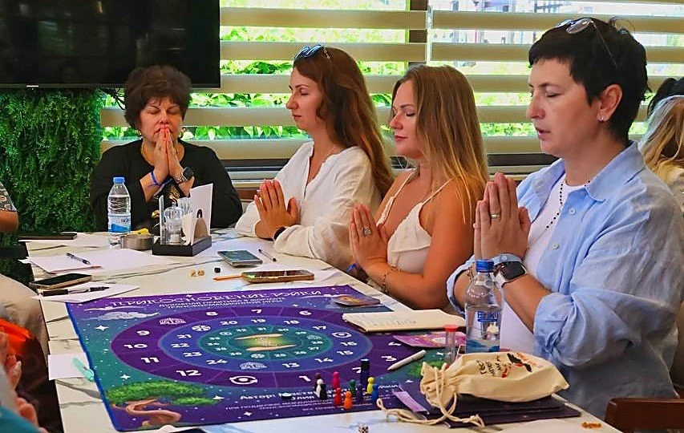

Выбор и жизненный тупик
- Не понимаю, что делать дальше
- Знаю, что нужно менять, но каждый раз откладываю
- Хожу по кругу и снова оказываюсь в той же точке
- Боюсь перемен, хотя по-прежнему уже не могу
Трансформационная игра

В игру можно принести любой запрос, который сейчас занимает вашу жизнь: отношения, семью, деньги, работу, здоровье, усталость, эмоции, поиск себя или духовный путь.
«Прикосновение Рэйки» помогает вынести этот запрос из бесконечного разговора в голове на игровое поле, увидеть собственные реакции и заметить варианты, которых раньше не было видно.
Онлайн и офлайн. В группе или индивидуально. Опыт Рэйки не нужен.
Сегодня это разговор с мужем, который вы опять перенесли. Завтра деньги, которые приходят и исчезают. Потом работа, где давно тесно, но страшно уйти, здоровье, злость на близких, усталость с самого утра и мысль «чего хочу я сама», затерявшийся где-то между семейным чатом, списком покупок и очередным сохранённым вебинаром.
Иногда человек уже понимает каждую часть по отдельности, но не видит, как они связаны и почему один и тот же сюжет возвращается в разных декорациях.
Запрос не нужно формулировать идеально. Достаточно назвать ситуацию, которая сейчас вас беспокоит.
Ваш запрос
Запрос не обязан звучать умно или духовно. Ниже реальные жизненные темы, с которыми человек может выйти на игровое поле.
Как проходит игра
Не красивую формулировку для анкеты, а ситуацию, которая забирает внимание: разговор, который вы откладываете, решение, к которому не можете подступиться, или повторяющийся сюжет. Я помогу сформулировать запрос точнее.
Карты и задания показывают не готовый ответ, а вашу реакцию. Где хочется спорить. Где всё понятно, но двигаться не хочется. Где неожиданно становится тихо. Так запрос выходит из бесконечного внутреннего монолога и становится тем, на что можно посмотреть.
Не нужно знать символы, уметь проводить сеансы или доказывать, что энергия существует. Рэйки уже включена в игровую механику. Вы наблюдаете за ощущениями, мыслями и тем, как меняется восприятие запроса.
Я не принимаю решение за вас и не подсовываю универсальную мудрость. Вы соединяете замеченные реакции, новые варианты и тот шаг, который действительно готовы сделать после игры.
Здесь не устраивают «прорыв» на глазах у незнакомых людей
После жёстких тренингов человек иногда уходит не с ясностью, а с ощущением, будто по нему проехали танком, вытащили наружу самое болезненное и оставили разбираться в одиночку. Такой эффектный аттракцион игре не нужен.
На «Прикосновении Рэйки» можно сомневаться, злиться, молчать, не соглашаться с картой и не рассказывать больше, чем вы готовы. Я помогу вам оставаться рядом со своим запросом, а не буду подталкивать к правильному или красивому ответу.
Игра помогает исследовать жизненную ситуацию, но не заменяет медицинскую, психотерапевтическую или юридическую помощь, когда она необходима.
Для кого
Можно прийти из любопытства или с конкретным запросом. Инициация, знание символов и опыт духовных практик не нужны. Слепая вера тоже.
Иногда и вторая ступень, и стопка сертификатов мирно лежат на месте, а человек всё равно устал, забросил практику или снова упёрся в знакомый запрос. Игра предлагает посмотреть на него не через новую теорию, а через собственные реакции.
Выберите индивидуальную игру. Весь ход будет посвящён вашему запросу и пройдёт один на один со мной.
После игры
Более точный запрос. Замеченный повторяющийся сценарий. Несколько новых вариантов действий и реакций в привычных ситуациях. Инструкцию, созданную под вас: что делать дальше после игры.
У каждого участника свой процесс. Игра не обещает одинакового результата, не лечит заболевания и не принимает жизненные решения вместо человека.
Говорят участницы
Два прямых отзыва без пересказа и постановки. Это личные впечатления участниц, а не обещание одинакового результата для всех.
Онлайн и офлайн
Пока непонятно, нужна полная игра или экспресс, группа или личная встреча? Напишите мне слово «ИГРА» и пару предложений о ситуации.
Общее игровое поле и участие других игроков.
Весь ход игры посвящён вашему запросу.
Сокращённый групповой формат.
Сокращённый формат один на один со мной.
Индивидуальная игра. В стоимость входит сеанс Рэйки от Мастера.
Все пять вариантов доступны онлайн и офлайн.
Коротко о важном
Первый шаг
С сомнением. С усталостью. С запросом без красивой формулировки. Даже с тем самым сообщением, которое вы открываете и снова закрываете, потому что пока не знаете, что ответить.
Напишите слово «ИГРА». С этого уже можно начать.